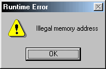
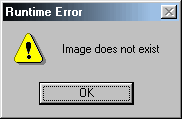

Hilfe


Parameter
| Datei$ | Beliebige Grafikdatei evtl. mit Pfad (Bmp, Jpg, Png, Pcx, Tga, Iff) |
| width | Breite jedes Animationsbildes in Pixel |
| height | Höhe jedes Animationsbildes in Pixel |
| Start | Startframe (normalerweise 0) |
| Frames | Anzahl der Animationsbilder |
| Modus |
Ab BlitzPlus:
1=Managed (Standard) 2=Dynamic 4=Scratch |
Rückgabewert
Identität des geladenen Bildes. Wenn eine Null zurückgeliefert wird, dann konnte die Grafikdatei nicht geladen werden.
Beschreibung
Diese Anweisung lädt ein Animationsbild. Es funktioniert eigentlich wie LoadImage , nur enthält dieses Bild gleich mehrere kleine Animationsbilder nebeneinander. Jedes Animationsbild hat die gleiche Breite und Höhe. Es dürfen auch keine Lücken zwischen den Bildern vorkommen. Wenn man die Animation mit DrawImage abspielt, dann muss man das Animation-Frame angeben.
, nur enthält dieses Bild gleich mehrere kleine Animationsbilder nebeneinander. Jedes Animationsbild hat die gleiche Breite und Höhe. Es dürfen auch keine Lücken zwischen den Bildern vorkommen. Wenn man die Animation mit DrawImage abspielt, dann muss man das Animation-Frame angeben.
BlitzBasic kann BMP-Bilder laden. Die Vollversion kann zusätzlich noch JPG, PNG, PCX, TGA, IFF laden.
Ab BlitzPlus wurde ein neuer "Modus"-Parameter eingebaut:
1=Managed: Grafiken werden in RAM (und VRAM) gehalten und wenn notwendig nach VRAM konvertiert, so können Grafiken nach Änderung der Auflösung erhalten werden. Solche Grafiken werden schnell gezeichnet - aber dafür sind die bei Änderungen langsam.
2=Dynamic: Grafiken werden nur im VRAM gehalten - Das ist die schnellste Variante. Grafiken gehen jedoch nach Änderung der Auflösung verloren.
4=Scratch: Grafiken werden nur im RAM gehalten - das ist sehr langsam. Das hat jedoch einen Vorteil: Ein PC hat viel mehr RAM als VRAM - Deshalb können TMP-Grafiken im RAM gehalten werden.
, um den freien Speicher zu ermitteln sowie FreeImage, um ein Bild aus dem Speicher zu entfernenZusatzinformation
- Ein Bild konnte auf dem Datenträger nicht gefunden werden
- Die Grafikdatei ist fehlerhaft
- Der Grafikspeicher wurde mit Graphics
gelöscht
- Wert der Variable "Bild" wurde gelöscht
- Die Variable "Bild" hat einen falschen Namen
- Die Variable "Bild" wurde nicht als Global
definiert
- Siehe auch GraphicsLost
(nur Blitz3D) 

Alternativ könnte auch die Fehlermeldung "Memory access violation" stehen, diese taucht jedoch meist nur bei ausgeschaltetem Debugger auf. Es empfiehlt sich dann den Debugger zu aktivieren um genauere Erkenntnisse über den Fehler zu erhalten.
Beispiel
Standardbeispiel:
SetBuffer BackBuffer()
gfxSparks = LoadAnimImage("Media\spark.bmp", 32, 32, 0, 3)
MaskImage gfxSparks, 255, 0, 255
While Not KeyHit(1)
Cls
If MilliSecs() > tmrSparks + 100 Then
tmrSparks = MilliSecs()
frmSparks = (frmSparks + 1) Mod 3
End If
DrawImage gfxSparks, MouseX(), MouseY(), frmSparks
Flip
Wend
Siehe auch
CreateImage, FreeImage, DrawBlock, DrawBlockRect, DrawImage, DrawImageRect, LoadImage, MaskImage